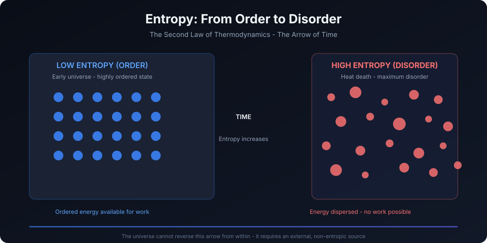

Entropy and Eternal Energy: A Thermodynamic Necessity for One Transcendent God
This work proposes that the second law of thermodynamics, the arrow of time, and the requirement of an eternal, non-entropic source of energy jointly imply a necessary transcendent boundary condition to the universe - identified across the Vedas, the Bible, and the Qur'an as the One God.

Introduction
Modern physics has revealed an unexpected asymmetry at the heart of reality: while the fundamental laws of mechanics are largely time-reversible, the universe itself is not. Time unmistakably flows in one direction - from past to future - and this directionality is governed not by mechanics, but by thermodynamics. The Second Law of Thermodynamics, which states that entropy in an isolated system tends to increase, provides the physical basis for the arrow of time. Entropy defines why causes precede effects, why memory points backward and not forward, and why the universe evolves from order to disorder rather than the reverse.
This raises a profound question: why did time ever begin flowing forward at all? The answer lies in what cosmologists call the Past Hypothesis - the assertion that the universe began in an extraordinarily low-entropy state. Without this assumption, the Second Law would not operate in a time-directed manner, and temporal order as we experience it would not exist. Yet this hypothesis is not explained by known physical laws; it is an imposed initial condition.
Roger Penrose famously quantified the improbability of such a beginning. Estimating the phase-space volume compatible with the universe's initial gravitational smoothness, Penrose calculated that the probability of the universe beginning in such a low-entropy state by random chance is approximately 1 in 10^(10^123) - a number so vast that it defies any meaningful appeal to naturalistic randomness. This is not merely fine-tuning; it is extreme ontological improbability. (Penrose's estimate derives from comparing the phase-space volume corresponding to an exceptionally smooth, low-entropy early gravitational configuration - such as the observed near-uniform Big Bang - to the vastly larger phase-space volume associated with generic high-entropy states, including universes dominated by black holes. The calculation assumes a natural measure on gravitational phase space, an assumption debated but widely employed in fine-tuning discussions.)
The problem is not simply why the universe is ordered now, but why it ever was ordered. Inflationary cosmology, often invoked as a solution, ultimately exacerbates the issue: inflation itself requires an even more finely tuned low-entropy precondition. As Penrose and others have argued, inflation does not eliminate the need for an extraordinarily special initial state; rather, it requires an even lower-entropy pre-inflationary condition to begin. Thus, physics successfully describes the evolution of the universe after the initial state, but remains silent on why such a state existed at all.
This work advances the central thesis that thermodynamics reveals the universe to be a closed (or effectively closed) entropic system that cannot account for its own low-entropy origin or sustained order. The arrow of time, the Second Law, and the improbability of the Past Hypothesis jointly imply the necessity of a transcendent, eternal, non-entropic source - one not contained within spacetime, yet foundational to its existence. Strikingly, this conclusion converges with the theological descriptions of God found independently in the Vedas, the Bible, and the Qur'an.
Thermodynamics as a Metaphysical Constraint
The Second Law of Thermodynamics states that in an isolated system, entropy does not decrease. While local decreases in entropy are possible, they are always compensated by greater increases elsewhere. When applied to the universe as a whole - commonly treated in cosmology as a closed or effectively closed system - the law implies a relentless progression toward maximum entropy, often described as heat death.
This has two critical metaphysical implications. First, the universe is not self-ordering at the global level. Second, no internal physical process can account for the universe's initial low-entropy condition without violating the Second Law. Entropy can be redistributed, delayed, or masked, but not fundamentally reversed by processes within the system itself.
The low-entropy origin of the universe - whether framed as a Big Bang singularity or an equivalent cosmological boundary - remains unexplained by physical law. Inflationary models, though successful in explaining large-scale uniformity, require an even more improbable initial configuration. Thus, the explanatory chain terminates not in law, but in boundary conditions - conditions that physics presupposes but does not generate.
This creates what may be termed the closed-system paradox: if the universe is closed and entropic, it cannot internally generate the ordered initial state required for its own temporal evolution. Any attempt to explain the origin of order purely from within the system results in circularity or contradiction.
Eternal Energy vs. Entropic Reality
The First Law of Thermodynamics ensures the conservation of energy: energy cannot be created or destroyed, only transformed. However, conservation does not imply usability. As entropy increases, energy becomes progressively less capable of performing work. A universe may conserve energy indefinitely while becoming thermodynamically inert.
This distinction is crucial. An eternal universe of conserved energy is not equivalent to an eternal source of order. If the universe itself were eternal in the past, entropy would already have reached equilibrium - yet the observed universe began in an extraordinarily low-entropy state. This directly contradicts the notion that the universe is its own eternal energy source.
Therefore, the source responsible for the universe's initial order cannot itself be subject to entropy. It must be non-entropic, timeless, and immutable - not merely conserving energy within the system, but grounding the system itself. Such a source cannot exist as a physical process within the universe, since all physical processes are temporally ordered and entropically constrained.
Scriptural Convergence (Non-Literal Interpretation)
Across distinct religious traditions, remarkably similar descriptions emerge of an ultimate reality that is eternal, unchanging, and the source of cosmic order.
The Vedic Tradition
In the Vedic and Upanishadic tradition, Brahman is described as sat-cit-ānanda - existence, consciousness, and bliss - unchanging and beyond manifestation. While the universe undergoes cycles of creation and dissolution (līlā and pralaya), Brahman remains untouched by change. The concept of Ṛta, the cosmic order, parallels the imposition of an initial low-entropy condition that makes temporal structure possible. The Nasadiya Sukta speaks of "That One" existing before creation, breathing without air - suggesting a non-physical, non-entropic mode of being.
The Biblical Tradition
In the Biblical tradition, God is described as the Alpha and Omega, the beginning and the end, encompassing time without being consumed by it. The declaration "I AM" signifies self-existence, not derived or contingent. The Logos in the Gospel of John functions as the ordering principle through which all things came into being - resonant with the idea of a boundary condition that instantiates order rather than evolving from it.
The Qur'anic Tradition
In the Qur'an, God is named Al-Qayyum, the Self-Subsisting Sustainer who maintains existence continuously. Creation is not a one-time event but an ongoing dependence. The phrase "Kun fa-yakūn" ("Be, and it is") expresses instantaneous ordering without processual decay, while tawḥīd affirms the absolute unity of this sustaining source.
Despite cultural and linguistic differences, all three traditions converge on a single claim: ultimate reality is one, eternal, and the ground of order, not a product of the universe it sustains.
God as Boundary Condition
In this framework, God is not a physical cause among causes, but the boundary condition of reality itself. Just as initial conditions in physics are not derived from the equations they enable, God is not subject to the laws that govern the universe. Being timeless and non-entropic, God provides the metaphysical basis for causality, temporal direction, and order.
This aligns with classical philosophical theology, where God is understood as the ground of being, not an intervening mechanism. It also avoids the "God of the gaps" fallacy: the argument does not invoke divine action to explain unknown physical processes, but rather identifies a structural explanatory limit inherent in thermodynamics itself.
Objections and Responses
- Multiverse theories attempt to address fine-tuning by appealing to large ensembles of universes. However, the multiverse as a whole still requires a low-entropy origin. The problem is displaced, not solved.
- Cyclic cosmologies, including Penrose's Conformal Cyclic Cosmology, attempt to reset entropy between aeons. Yet unresolved issues of information loss and entropy accumulation persist, and the arrow of time remains unexplained at the fundamental level.
- Emergent time proposals in quantum gravity suggest that time may not be fundamental. Even so, the emergence of a branch with a pronounced thermodynamic arrow still presupposes a highly ordered boundary condition.
In all cases, physics continues to rely on unexplained initial structure. Thermodynamics still points beyond the system.
Conclusion
God is not introduced here as an explanatory placeholder for ignorance, but as a thermodynamic necessity. The arrow of time, the Second Law, and the universe's low-entropy origin jointly indicate that physical reality depends on a transcendent, eternal source not subject to entropy or temporal decay.
Physics, when followed to its logical limit, gestures beyond itself. Theology, when stripped of literalism and sectarianism, names what physics implies. The convergence suggests not many gods, but One - known variously across traditions, yet unified in essence as the eternal Sustainer of order.
Entropy and Eternal Energy - A Simple Explanation
Entropy means disorder or loss of usable energy. In simple words: everything in the universe naturally runs down over time.
- A hot cup of tea becomes cold.
- A new machine becomes old and worn out.
- Buildings need maintenance, or they slowly decay.
Science says this happens because of the Second Law of Thermodynamics:
- Energy keeps spreading out and becoming less useful.
- Order naturally goes towards disorder.
Big Question: If Everything Loses Energy, How Did the Universe Begin?
The universe is very ordered at the beginning:
- Precise laws of physics
- Perfect balance of forces
- Life-supporting conditions
But science says:
- Order cannot come by itself from disorder
- Energy cannot create itself
- The universe is not eternal in usable energy
So the universe must have started at some point, with:
- Very low entropy (high order)
- Enormous usable energy
This starting point cannot come from inside the universe, because the universe itself follows entropy.
Therefore: There Must Be an Eternal Energy Source
This leads to a logical conclusion:
- There must be one eternal source of energy
- This source must be outside time and entropy
- It must not decay
- It must be unchanging and self-existent
Science cannot describe this source fully. Religion calls this source God.
How Ancient Scriptures Say the Same Thing
1. Vedas (Hinduism)
- God is called Brahman
- Described as: Eternal (Sanātana), Source of all energy, Beyond time and decay
- "From that, all energy and matter come."
2. Bible (Christianity)
- God says: "I AM WHO I AM"
- Meaning: Self-existing, Depends on nothing, Creator of all energy and matter
3. Qur'an (Islam)
- God is Allah
- Described as: Al-Qayyum (Self-Sustaining), Al-Awwal (The First), Al-Ahad (One)
- "He neither tires nor decays."
One Conclusion from Science and Faith
- Entropy shows the universe cannot run forever by itself
- Energy is being used up
- So there must be one eternal, unchanging source
- Different religions use different names, but the logic points to one Transcendent God, not many competing gods.
Final Simple Summary
The universe is not eternal. Energy is running down. Order cannot come from disorder. Therefore, there must be:
- One eternal energy source
- Beyond entropy
- Beyond time
- The creator of all
Science hints at this truth. Vedas, Bible, and Qur'an say the same thing in spiritual language.
Appendix: Aristotle's Ten Categories
Aristotle's ten categories are fundamental classifications of being, describing what can be said about a subject, including Substance, Quantity, Quality, Relation, Place, Time, Position, State, Action, and Passion (being affected); they provide a framework for understanding existence, with Substance (like a specific person or thing) being primary, and the other nine "accidents" (like color, size, or location) inhering within it.
Here are the ten categories with examples:
- Substance (Ousia): The essential being of a thing (e.g., a specific human, a horse).
- Quantity (Poson): How much or many (e.g., ten feet long, two pounds).
- Quality (Poion): What kind (e.g., white, grammatical, sweet).
- Relation (Pros ti): How it relates to something else (e.g., double, half, larger).
- Place (Pou): Where it is (e.g., in the marketplace, in the Lyceum).
- Time (Pote): When it is (e.g., yesterday, last year).
- Position (Keisthai): Its physical orientation (e.g., sitting, lying).
- State/Condition (Echein): What it possesses or is equipped with (e.g., shod, armed).
- Action (Poiein): What it does (e.g., to cut, to heat).
- Passion/Affection (Paschein): What it undergoes or suffers (e.g., to be cut, to be heated).
Key Concept: Substance is primary because it exists independently, while the other nine categories are considered accidents, meaning they depend on substance for their existence (e.g., redness (Quality) needs a red substance to exist).